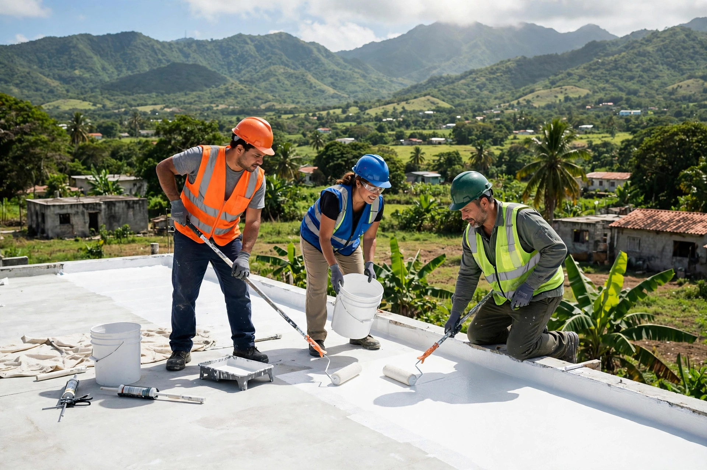
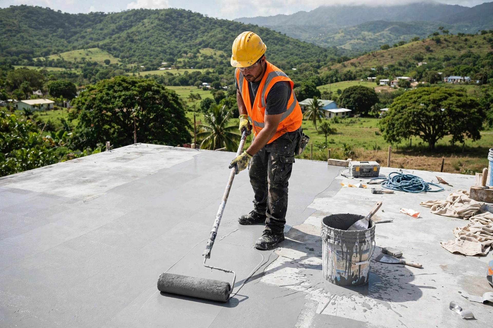
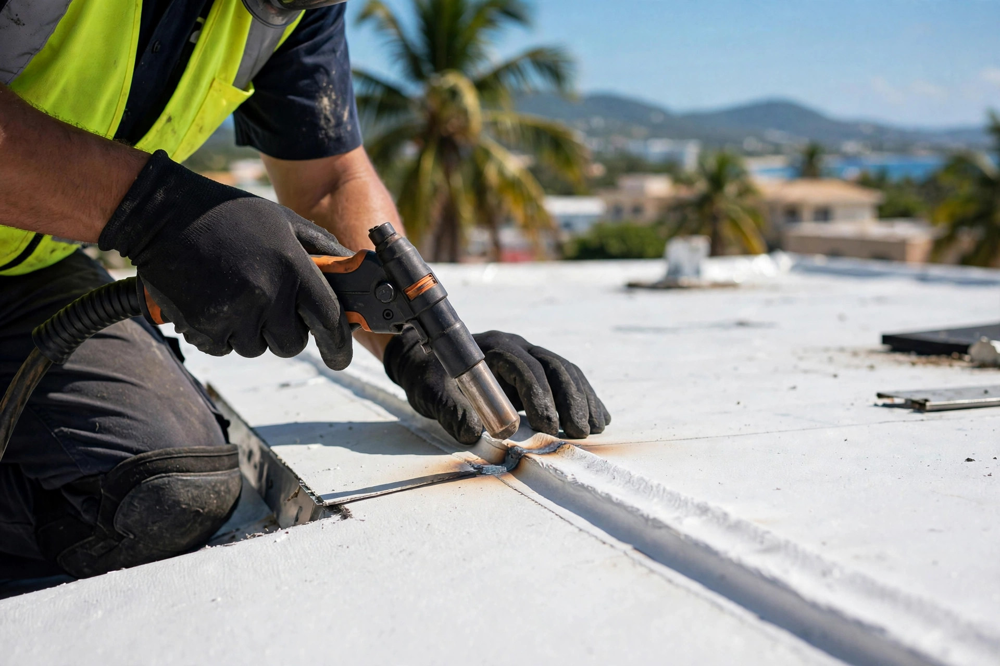
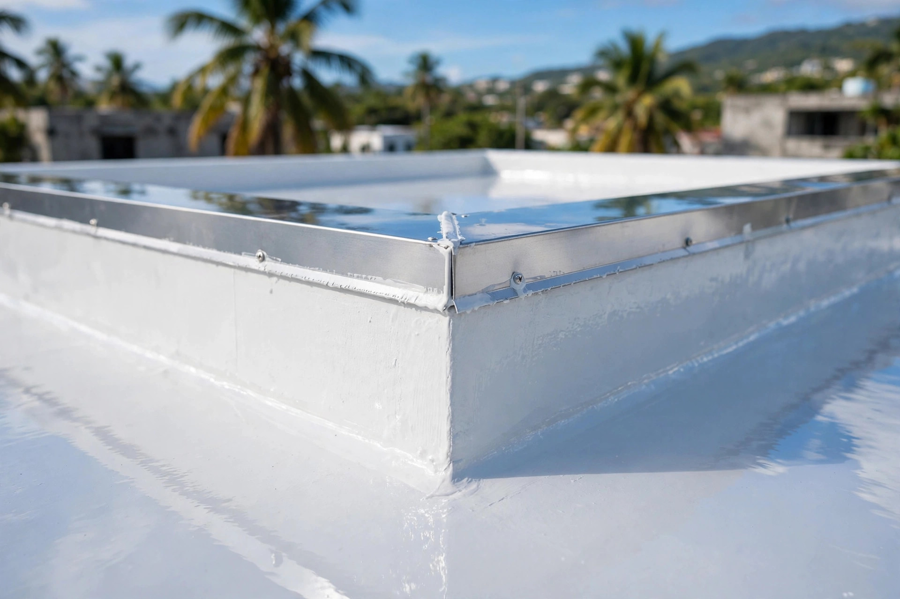

Empresa puertorriqueña de construcción general: sellado de techos, remodelaciones y más. Rapidez, garantía y experiencia, con estimados gratis.

Sellado de techos y construcción con acabado profesional.



Construcción general y sellado de techos en Aguas Buenas y casi toda la isla.
Sistemas de sellado para techos residenciales y comerciales.
Instalación de membrana con soldadura profesional.
Terrazas, marquesinas, gazebos y casas completas.
Baños, cocinas, fachadas y pintura.
Base en Aguas Buenas, servicio amplio.
Llama al 939-640-4188 sin compromiso.
Empresa puertorriqueña: rapidez, garantía y experiencia.
Construcción netamente puertorriqueña.
Trabajamos rápido, con garantía.
Techo, remodelación y construcción con el mismo equipo.
En casi toda la isla, sin compromiso.
Lo que todo cliente pregunta antes de contratar.
Sí. Trabajamos estimados gratis en casi toda la isla, sin compromiso.
Más de 15 años en construcción general residencial y comercial en Puerto Rico.
No. También hacemos construcción y remodelación general: terrazas, baños, pintura, losas y más.
Sí, cubrimos casi toda la isla. Llámanos y confirmamos tu pueblo.
Llama o escribe por WhatsApp al 939-640-4188 y coordinamos la visita.
Cotización gratis
Completa los 3 pasos y te abrimos WhatsApp con tu solicitud lista para enviar.
Esta página la creó ManuPro. Escríbenos hoy mismo y cotiza la website profesional de tu negocio.
Cotizar por WhatsApp